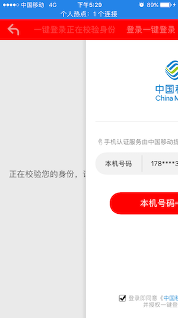
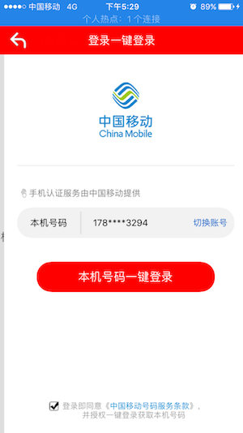
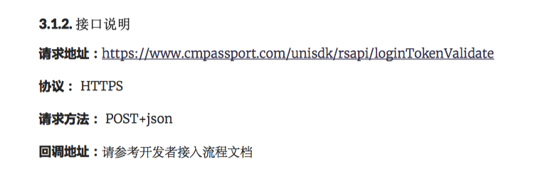

很久没有更新博客了，近期接到了集成移动一键登录功能，因此做了一个一键登录工具类，把UI设置和功能都封装到工具类中。
移动一键登录
现在的移动一键登录SDK只有两个主要功能，分别是本机号码校验和获取用户信息功能。
个人理解：前者的作用是验证本次登陆的手机账号是否为手机中插着的手机号。后者的作用是用于登陆。
因此，本次的工具类是基于后者提供的功能开发的。
工具类提供的接口
业务逻辑相关的接口
1 | /** |
调用-(void)getTokenExpWithController方法后进入一键登录界面，但是进入的过程是这样的：
会先进入一个获取手机号界面如下图1，然后几秒钟后再跳转到一键登录界面。


接下里说一下预取号方法。当在调用-(void)getTokenExpWithController方法之前，先调用-(void)preGetPhonenumberSuccess方法，会预先获取到本机手机号。因此可以节省下几秒钟的时间。
大致解释如何使用该功能
在调用-(void)preGetPhonenumberSuccess方法后，用户点击一键登录按钮后，会回调回token字段。这个token的作用是去获取用户信息的。
在移动的开发文档中，有提供获取用户信息的接口：

该接口所需的参数中有一个token参数，返回的数据中有登陆的手机号字段。
因此大致做法是，本地调用一键登录接口，获取token参数，再把token以及其他相关的参数传给后台，让后台去调用获取用户信息接口，获得手机号后进行比较，如果是同一个，登陆成功，再去数据库中获取用户数据返回给前端。
UI设置接口
在新的SDK中，移动提供了开发者自定义UI功能。但是当前版本提供的可修改的界面仍不是很多。
移动的接口如下：
1 | + (void)customUIWithParams:(NSDictionary *)customUIParams |
customUIParams字典键值对在开发文档中有写。
我对UI自定义功能也进行了二次封装，将这些方法放在了HXTYRZManager的分类中。举例如下：
1 | - (void)setNavBarLeftImage:(UIImage *)image; //层级1 |
其中的实现：
1 | - (void)setNavBarLeftImage:(UIImage *)image //层级1 |
本质为在工具类中设置字典，跳过外部设置。并且，我在工具类的显示登陆方法实现中，调用了移动的-(void)customUIWithParams方法。因此，你需要在调用我的显示登陆接口之前，先设置好UI。